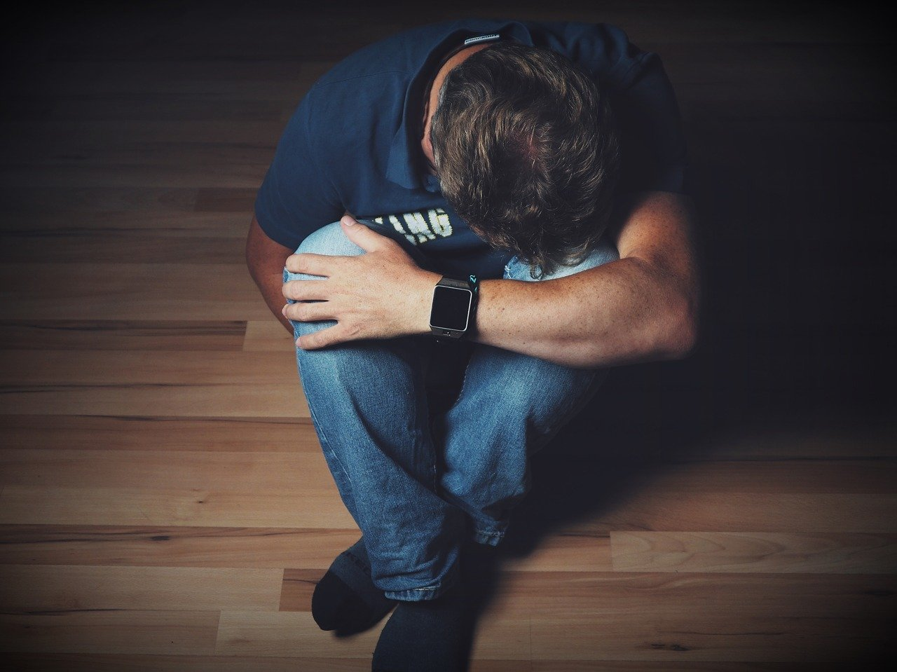
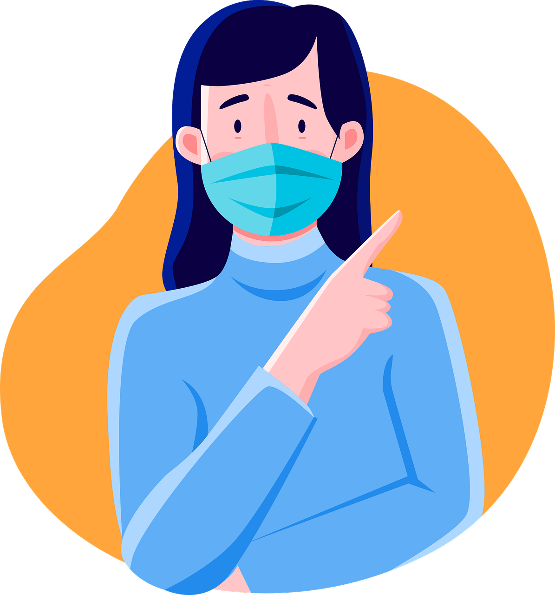

Según la Organización Mundial de la Salud (OMS) dice que la depresión es un trastorno mental frecuente, que se caracteriza por la presencia de tristeza, pérdida de interés o placer, sentimientos de culpa o falta de autoestima, trastornos del sueño o del apetito, sensación de cansancio y falta de concentración.
El grave impacto que ha tenido el coronavirus en el bienestar emocional de la población es innegable. Uno de los grupos más afectados por la depresión post pandemia, aparte de otras enfermedades de salud mental, son los jóvenes.
Los jóvenes han vivido el aislamiento durante un periodo clave para el desarrollo de su identidad personal, donde las relaciones sociales ocupan un lugar muy importante.
Sobre todo, hay que destacar el que se inició en marzo de 2020 y que duró más de un mes.
Mucho tiempo invertido en redes sociales, que puede derivar en depresión por las comparaciones constantes con otras personas, acoso, o a través de otros problemas como son los trastornos alimenticios.
Sentimientos de tristeza
Sentimientos de ira
Perdida de interés en actividades cotidianas
Autoestima baja
Sensibilidad extrema al rechazo o fracaso
Pensamientos de muerte o suicidio
Perdida de energía
Insomnio o sueño extremo
Cambios de apetito
Consumo de alcohol o drogas
Inquietud: incapaz de estar quieto
Aislamiento social
La depresión generalmente se trata con psicoterapia, medicamentos o una combinación de ambos.
La psicoterapia (a veces llamada “terapia de diálogo”) es un término para las técnicas de tratamiento que pueden ayudarte a identificar y controlar emociones, pensamientos y comportamiento problemáticos.
Si tu médico cree que necesitas medicamentos para tratar la depresión, es posible que te recete un antidepresivo. El medicamento puede tomar hasta seis semanas para tener efecto y no debes dejar de tomarlo sin la ayuda de un médico. También debes evitar el uso de alcohol o drogas que no te hayan recetado para que los medicamentos puedan funcionar. Los antidepresivos pueden tener efectos secundarios. Estos efectos secundarios generalmente son leves (posibles molestias del estómago o dolores de cabeza) y pueden desaparecer solos.
Podrías realizar algunas cosas en tu rutina diaria que ayudaran a que puedas mantener tu mente ocupada
Intenta hablar con un adulto de confianza, como un padre o tutor, maestro o un consejero escolar. Si no te sientes cómodo hablando con un adulto, intenta hablar con un amigo. Busca ayuda, esta información la encuentras en el apartado de contacto
Tras el aislamiento y el distanciamientos social se nos exigió cambiar nuestra forma de vivir, la preocupación de no saber que puede pasar genera esta sensación ansiosa.El miedo a contagiarse o que alguien de nuestra familia enfermara y pudiera morir era aun mas preocupante. Los medios de comunicación, la excesiva información que teníamos día con día, y sin saber cuando podríamos estar a salvo. El alejarnos de nuestra familia y de nuestros amigos, la carga de trabajos y clases desde casa fueron los detonante para generar ansiedad en nosotros.